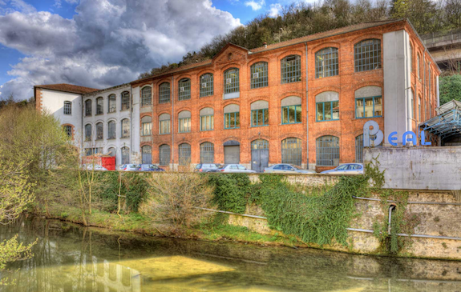

Second Stage
Chez Béal - 3 janvier au 10 février

Contexte
J'ai été accepté en tant que Stagiaire du Service Informatique chez Béal.
C'est une entreprise travaillant essentiellement dans la fabrication de cordes et d’équipements destinés à la grimpe (escalade et autres.).
Elle est éparpillée un peu partout sur le globe avec des sites comme ceux implémentés en France à Vienne ou à Madagascar.
C’est une entreprise de type SAS. Actuellement ils sont un peu plus d’une 50 d'employés dans la boite.

Missions
On m'a sollicité lors de mon entrée chez Béal sur deux sujets qui feront office de projets à devoir réaliser au cours de toute la période de mon stage chez eux.
Informatisation des données saisies pour les OFs (Ordre de Fabrication)
J'ai du concevoir à partir d'un document transmis par l'entreprise, des maquettes ainsi que d'une modélisation de BDD grâce à un diagramme de classe


Migration d'un site Magento vers du Prestashop
Afin de regrouper tous leurs sites sur la même technologie, ils m'ont fait la demande de migrer leur site Edelweiss sous Prestashop.
Je me suis construit un petit environnement de travail afin d'héberger temporairement ce nouveau site en utilisant Xampp
Bilan
Au terme de ce Stage, on m'a demandé de rédiger une documentation utilisatrice sur les deux projets réalisés. Cela m'a permis également d'engrenger plus de connaissances notamment sur Smarty qui est la techno utilisée par Prestashop.